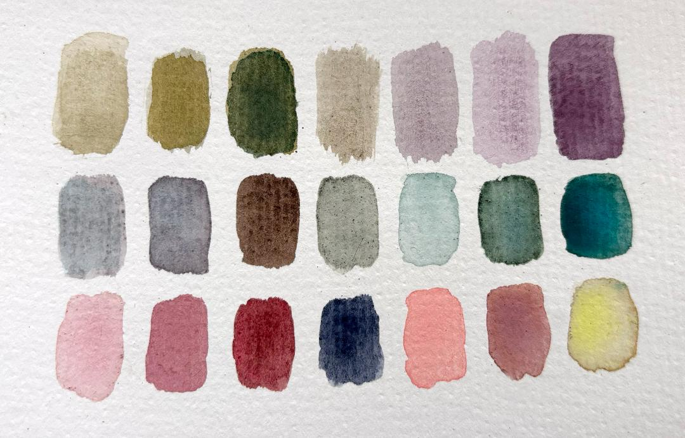

Elegant Formal
Please avoid overly loud patterns and colors, and keep the color scheme below in mind when selecting your outfit. The overall theme will be ethereal, whimsical, and slightly vintage. Solid colors are preferred. Feel free to reach out to either of us if you feel unsure!
Venue Considerations
The ceremony and reception take place outdoors. Most of the night we will be walking on hardwood flooring under a large tent, but there will be moments when you must walk on grass, gravel, or mulch (so you might want to avoid wearing thin stilettos and opt for a block heel). August weather at this time is typically 70–85°F (21–30°C). We suggest bringing a light layer for the evening.
The ceremony will be held outdoors with a rain backup tent and umbrellas available should we need them.
